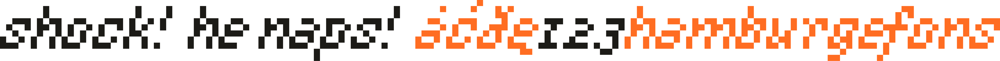

____________________________________ ____________________________________
(_ `-,°,-' _)
·
____________________________________ ____________________________________
(_ `-,°,-' _)
·
╓───────────────────────────────────────────────────────────────────────────────╖
║ , , ║
║ |\ /= ║
║ _________________ )\ / | ║
║ | | ; \_/`,/`,/ | ║
║ | | |,-'''''''''-,| ║
║ | | \ / ║
║ | Waterrail _|^_ \ -,. .,- / ║
║ | -( \ _,7 ` ' , ` ' F,_ ║
║ | -( \ _,\ ^ /,_ ║
║ |______________-(___ ) '-_______-` ║
║ ║
╙── translations | fonts ───────────────────────────────────────────────────────╜
I've been interested in typography pretty much since childhood. I haven't actually taken any classes so I'm not really familiar
with the theoretical side of it, but I like to mess around with fonts for fun.
For designing fonts, I've used multiple programs and apps, such as FontForge and
Fontstruct, among others.
_ , _ (____________________________________.-'o`-.____________________________________) shock! he naps! – an italic pixel font. SAMPLE | DOWNLOAD  ____________________________________ ____________________________________ (_ `-,°,-' _) · _ , _ (____________________________________.-'o`-.____________________________________) linja sitelen – a Comic Sans-inspired sitelen pona font. SAMPLE | DOWNLOAD